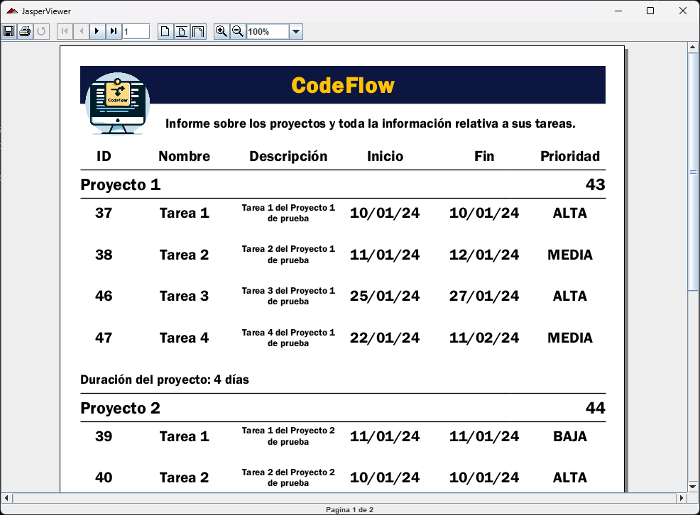
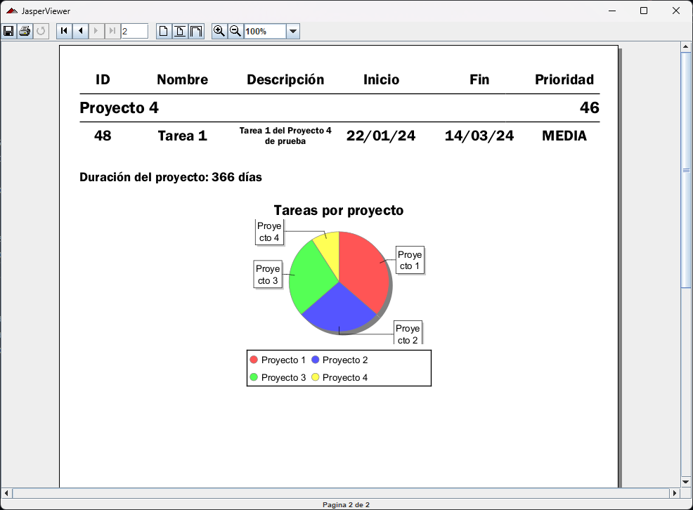

La aplicacion permite crear reportes, de forma que podemos extraer informacion sobre los proyectos en caso de que lo necesitemos.
Los reportes tienen el siguiente formato:
Podemos obtener datos sobre las tareas relativas a los proyectos y una grafica al final que representa el porcentaje de tareas por proyecto.
Para obtener un reporte, en la ventana principal pulsamos en el icono de la barra lateral con forma de cadena y nos pedira un parametro. Este parametro representa el id de un proyecto, en caso de que lo queramos de un unico proyecto, si no lo dejamos en blanco (Vease base de datos).